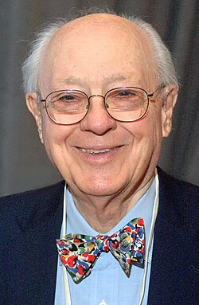
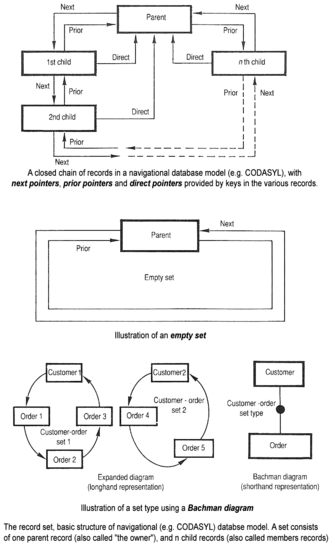

Charles Bachman | |
|---|---|
 Bachman in 2012 | |
| Born | Charles William Bachman III December 11, 1924 Manhattan, Kansas, U.S. |
| Died | July 13, 2017 (aged 92) Lexington, Massachusetts, U.S. |
| Education | University of Pennsylvania (BS) Michigan State University (MS) |
| Known for | Integrated Data Store |
| Awards | Turing Award (1973) National Medal of Technology and Innovation (2012) ACM Fellow (2014) |
| Scientific career | |
| Fields | Computer science |
| Institutions | Dow Chemical General Electric Cullinet Bachman Information Systems |

Charles William Bachman III (December 11, 1924 – July 13, 2017) was an American computer scientist, who spent his entire career as an industrial researcher, developer, and manager rather than in academia. He was particularly known for his work in the early development of database management systems. His techniques of layered architecture include his namesake Bachman diagrams. He won the 1973 ACM Turing Award.
Charles Bachman was born in Manhattan, Kansas, in 1924, where his father, Charles Bachman Jr., was the head football coach at Kansas State College. He attended high school in East Lansing, Michigan, where his father served as head football coach at Michigan State College from 1933 to 1946.
In World War II he joined the United States Army and spent March 1944 through February 1946 in the South West Pacific Theater serving in the Anti-Aircraft Artillery Corps in New Guinea, Australia, and the Philippine Islands. There he was first exposed to and used fire control computers for aiming 90 mm guns.[2]
After his discharge in 1946 he attended Michigan State College and graduated in 1948 with a bachelor's degree in mechanical engineering, where he was a member of Tau Beta Pi. In mid-1949, he married Connie Hadley.[3]
He then attended the University of Pennsylvania. In 1950, he graduated with a master's degree in mechanical engineering, and had also completed three-quarters of the requirements for an MBA from the university's Wharton School.[2]
Bachman died on July 13, 2017, at his home in Lexington, Massachusetts, of Parkinson's disease at the age of 92.[4]
Bachman spent his entire career as a practicing software engineer or manager in industry rather than in academia. In 1950, he started working at Dow Chemical in Midland, Michigan.
In 1957, he became Dow's first data processing manager. He worked with the IBM user group SHARE on developing a new version of report generator software, which became known as 9PAC. However, the planned IBM 709 order was cancelled before it arrived.[5]
In 1960, he joined General Electric, where by 1963 he developed the Integrated Data Store (IDS), one of the first database management systems using what came to be known as the navigational database model, in the Manufacturing Information And Control System (MIACS) product.
Working for customer Weyerhaeuser Lumber, he developed the first multiprogramming network access to the IDS database, an early online transaction processing system called WEYCOS in 1965.
Later, at GE, he developed the "dataBasic" product that offered database support to Basic language timesharing users. In 1970, GE sold its computer business to Honeywell Information Systems, so he and his family moved from Phoenix, Arizona to Lexington, Massachusetts.[6]
In 1981, he joined a smaller firm, Cullinane Information Systems (later Cullinet), which offered a version of IDS that was called IDMS and supported IBM mainframes.[6]
In 1983, he founded Bachman Information Systems, which developed a line of computer-aided software engineering (CASE) products. The centerpiece of these products was the BACHMAN/Data Analyst, which provided graphic support to the creation and maintenance of Bachman Diagrams. It was featured in IBM's Reengineering Cycle marketing program, combining:
In 1991 Bachman Information Systems had their initial public offering, trading on the NASDAQ with the symbol BACH. After reaching a high of $37.75 in February 1992, the price hit $1.75 in 1995. In 1996, his company merged with Cadre Technology to form Cayenne Software.[7] He served as president of the combined company for a year, and then retired to Tucson, Arizona. He continued to serve as chairman of the board of Cayenne, which was acquired by Sterling Software in 1998.[2][8]
Bachman published dozens of publications and papers.[13] A selection:
After his retirement, Bachman volunteered to help record the history of early software development. In 2002 he gave a lecture at the Computer History Museum on assembling the Integrated Data Store,[14] and an oral history for the ACM in 2004.[5] Bachman papers from 1951 to 2007 are available from the Charles Babbage Institute at the University of Minnesota.[13] In 2011, he contributed an oral history to the Institute of Electrical and Electronics Engineers.[6]
{kind=link}
{kind=link}